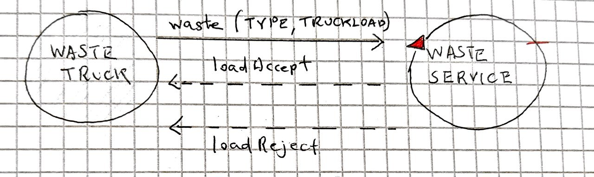

Introduction
Tema finale corso di studio Ingegneria dei sistemi software, Laurea Magistrale Università di Bologna
OLD VERSIONS
Requirements
A company intends to build a WasteService for the separate collection of waste, composed of a set of elements:
a service area (rectangular, flat) that includes:
an INDOOR port, to enter waste material
a PlasticBox container, devoted to store objects made of plastic, upto MAXPB kg of material.
a GlassBox container, devoted to store objects made of glass, upto MAXGB kg of material.
The service area is free from internal obstacles, as shown in the following picture:

a DDR robot working as a transport trolley, that is intially situated in its HOME location. The transport trolley has the form of a square of side length RD.
The transport trolley is used to performa a deposit action that consists in the following phases:
pick up a waste-load from a Waste truck located on the INDOOR
go from the INDOOR to the proper waste container
deposit the waste-load in the container
a Service-manager (an human being) which supervises the state of the service-area by using a WasteServiceStatusGUI.
a Sonar and a Led connected to a RaspnerryPi. The Led is used as a warning devices, according to the following scheme:
the Led is off when the transport trolley is at HOME
the Led blinks while the transport trolley is moving
the Led is on when transport trolley is stopped.
The Sonar is used as an ‘alarm device’: when it measures a distance less that a prefixed value DLIMT, the transport trolley must be stopped. It will be resumed when Sonar detects again a distance higher than DLIMT.
TFRequirements
The main goal of the WasteService software is to allow a Waste truck to deposit its load of TruckLoad kg plastic or glass in the proper container.
The global story can be described as follows:
The Waste truck driver approaches the INDOOR and sends (using a smart device) a request to store the load, by specifyng the type of the material (plastic or glass) and its TruckLoad.
The WasteService sends the answer loadaccept if the final content of proper container will not surpass the maximum value allowed (MAXPB or MAXGB). Otherwise, it sends the answer loadrejecetd and the Waste truck leaves the INDOOR area.
When the load is accepted, the transport trolley reaches the INDOOR, picks up the material, goes to the proper container and settles the material. During this activity, the WasteService blinks the Led
When the deposit action is terminated, the transport trolley excutes another deposit command (if any) or returns to its HOME.
The WasteService must create a WasteServiceStatusGUI that shows to the Service-manager:
the current state of the transport trolley and it position in the room
the current weigth of the material stored in the two waste-containers
the current state of the Led
Requirement analysis
Dopo una prima analisi del testo dei requisiti, sono emersi alcuni punti non chiari
dei quali è stato richiesto chiarimenti verso il committente.
Riportando in seguito
- Possono più WASTE_TRUCK arrivare nello stesso momento all'interno del sistema? oppure entra uno solo quando quello precedente ha liberato INDOOR?
- r1: I truck possono arrivare uno solo alla volta e con loro anche i messaggi di richiesta.
- r2: Però un messaggio di richiesta potrebbe arrivare mentre il Trolley sta scaricando
- In caso di load_accepted il WASTE_TRUCK libera INDOOR subito dopo che il TROLLEY ha prelevato il carico?
- Si, per cui vale la r2
- La WASTE-SERVICE considera il volume dei contenitori attualmente disponibili oppure è impossibile che il TROLLEY non compia il suo carico, quindi in caso di TROLLEY in transito, assieme al volume dei contenitori viene considerato anche il peso del carico in transito?
- Per rispondere positivamente a una richiesta di deposito mentre il trolley sta scaricando, deve essere considerato anche il carico in transito, come se fosse già stato depositato
- LED che è accesso quando il TROLLEY È STOPPED : inteso quando fermato a causa del sonar? oppure anche davanti ai contenitori per scaricare il carico?
- Solo a causa del sonar
-
Se il trolley è in posizione HOME e il sonar rileva una distanza minore di DLIMIT, in che stato vuole che sia il LED?
- Il Led deve essere off. Deve diventare on se il Trolley deve muoversi ma il sonar rileva una distanza < DLIMT
Tramite la seguente tabella identifico in che stato deve essere il led
| TROLLEY \ SONAR | MINORE DLIMIT | MAGGIORE DLIMIT |
|---|---|---|
| HOME | LED OFF | LED OFF |
| WORKING | LED ON | LED BLINK |
core-functionality
The Waste truck driver approaches the INDOOR and sends (using a smart device) a request to store the load, by specifyng the type of the material (plastic or glass) and its TruckLoad .
The WasteService sends the answer loadaccept if the final content of proper container will not surpass the maximum value allowed (MAXPB or MAXGB). Otherwise, it sends the answer loadrejecetd and the Waste truck leaves the INDOOR area.
- WasteService ha conoscenza di MAXPB e MAXGB, in modo da poter inviare le due risposte
When the load is accepted , the transport trolley reaches the INDOOR, picks up the material , goes to the proper container and settles the material.
During this activity, the WasteService blinks the Led- Problema: innesco procedura proattiva di Transport_trolley
(denominato in seguito issue_trolley) - Problema: comunicazione da parte del Transport_trolley della fine del prelievo dei materiali, il truck solo dopo il prelievo libera INDOOR ( Q2 )
(denominato in seguito pickup) When the deposit action is terminated , the transport trolley excutes another deposit command (if any) or returns to its HOME.
- Problema: comunicazione da parte del Transport_trolley della terminazione del lavoro assegnato
(denominato in seguito work_complete) - Problema: al Transport_trolley devono arrivare informazioni riguardanti l'incarico successivo
(denominato in seguito next_work)
Modello dei requisiti
I requisti che non portano ad nessun problema (R1, R2) insieme definiscono il seguente modello dei requisiti
- download
- path : src/modello_requisti.qak
- 
WasteService è modellato logicamente come attore perchè lavora intrinsecamente a scambio di messaggi
- Reattivo sensibile alle richieste dei Waste_Truck
- Proattivo Commissionare il Transport_trolley a seguito di valutazioni (riguardante alla capacità disponibile) e rispondere alla richiesta arrivata
WasteTruck è un POJO in quanto ente esterno dal sistema in progettazione
alarm
YAGNI, non è il centro del problema in questa fase
statusGUI
The WasteService must create a WasteServiceStatusGUI that shows to the Service-manager:
the current state of the transport trolley and it position in the room
the current weight of the material stored in the two waste-containers
- Problema: chi può accedere a queste informazioni?
(denominato in seguito conoscenza) -
the current state of the Led
Problem Analysis
issue_trolley
La direzione della comunicazione è sicuramente DA Waste_Service VERSO Transport_trolley, Da requisiti R1 R2 Waste_Service ha l'informazione di quando un Waste_Truck invia una richiesta, questo verso garantisce una comunicazione by-need in modello push.
proposta #1: evento
- PRO
- disaccoppiamento totale, Waste_Service non è a conoscenza dell'esistenza del Transport_trolley
- CONTRO
- non è reliable , ogni incarico inviato dal Waste_Service dovrebbe venir gestito dal trolley
- per questo particolare problema tramite Q1 Q2, individuo che il Transport_trolley deve essere sensibile all'evento per tutto il percorso a parte il tratto da HOME ad INDOOR
- Una possibile soluzione per forzare reliability potrebbe essere:
inviare (dopo un timeout) una request al trolley per vedere se effettivamente sta effettuando l'incarico, ma in questo caso perdiamo il vantaggio del disacoppiamento totale. (Waste_Service deve conoscere Transport_trolley)
proposta #2: dispaccio
- PRO
- La connessione è reliable, se il trolley non riceve l'incarico, l'infrastruttura genera una eccezione esplicita.
- Necessito comunque di un unico messaggio per questo problema.
- CONTRO
- Il Waste_Service deve essere a conoscenza del Transport_trolley.
proposta #3: request-response
- PRO
- La connessione è reliable, se il trolley non riceve l'incarico, l'infrastruttura genera una eccezione esplicita.
- CONTRO
- Necessito di due messaggi (request response) per soddisfare questo problema, inoltre non è chiara la semantica della risposta
- La semantica della risposta più straight-forward è che risponde subito così il Waste_Service sa che ha ricevuto il messaggio

informazione posizione containers
Sorge il dilemma di quale entità (Waste_Service o Transport_trolley) deve essere a conoscenza dell'associazione NOME_CONTAINER ==> POSIZIONE NELLO SPAZIO
- Se questa informazione la possiede Waste_Service:
il payload del messaggio di issue_trolley sono le coordinate (oppure coppia di coordinate di vertici opposti se delimito un'area rettangolare) del container destinazione - Se questa informazione la possiede Transport_trolley:
il payload é semplicemente il nome del container destinazione
pickup
La direzione della comunicazione è Da Transport_trolley VERSO Waste_Service e Waste_Truck
Notiamo subito che la comunicazione tra Transport_trolley verso il Waste_Truck deve essere intermediata da Waste_Service per non avere un ulteriore accoppiamento
Trolley to Waste_Service
proposta #1: evento
- PRO
- disaccoppiamento, il Transport_trolley non conosce il Waste_Service.
Se possibile vorrei mantenere il Transport_trolley indipendente dal resto del sistema - CONTRO
- unreliability
ma è fatale che il Waste_Truck liberi INDOOR esattamente quando il Transport_trolley preleva il materiale? potrebbe liberare in un secondo momento?
proposta #2: dispaccio
- PRO
- reliable
- CONTRO
- dipendenza dal Transport_trolley verso Waste_Service
proposta #3: request-response standard
È solo una complicazione del dispaccio, stesse considerazioni ma un CONTRO in più
- CONTRO
- due messagggi per questo problema
proposta #4: request-response, sfruttando proposta #3 di issue_trolley
La semantica del messaggio di risposta della richiesta goal per issue_trolley è aperta a rivalutazioni; possiamo pensare che il Transport_trolley risponde al termine del prelievo, e WasteService agisce di conseguenza notificando Waste_Truck
- PRO
- sfrutto un messaggio esistente
- connessione reliable
- Transport_trolley non ha bisogno di conoscere il Waste_Service, gli basta rispondere al messaggio (goal) arrivato
- CONTRO
applicabile solo quando scelgo proposta #3 di issue_trolley
Waste_Service to Waste_Truck
proposta #1: dispaccio
proposta #2: request-response, sfruttando R2 loadaccept
Il ragionamento è uguale per il confronto di proposta #2 e proposta #4 di
work_complete
La direzione della comunicazione è Da Transport_trolley VERSO Waste_Service.
Le possibili proposte di soluzione e le corrispettive considerazioni sono uguali al problema pickup, con la seguente piccola modifica
proposta #4: request-response, sfruttando proposta #3 di issue_trolley
La semantica del messaggio di risposta della richiesta goal per issue_trolley è aperta a rivalutazioni; possiamo pensare che il Transport_trolley risponde al termine del percorso , e WasteService agisce di conseguenza.
Ovviamente la proposta #4 pickup e la proposta #4 work_complete sono in conflitto , non è possibile attribuire due semantiche allo stesso messaggio di risposta.
Se come requisito di correttezza non è richiesto che Waste_Truck debba liberare INDOOR esattamente nell'istante in cui vengono prelevati i materiali; si può pensare di utilizzare la semantica ad evento per pickup, la semantica response per work_complete (che implicherebbe la semantica request per issue_trolley); work_complete nel caso in cui non sia arrivato l'evento pickup, all'arrivo di work_complete viene inviato loadaccept
next_work
Non riesco a stabilire a priori un verso di comunicazione, entrambi i versi possono avere senso (by need e non polling), ma preferisco in caso di accoppiamento di mantenere quelli presenti, quindi DA Waste_Service VERSO Transport_trolley.
Per la domanda Q1, so per dominio che mi possono arrivare altre richieste da nuovi Waste_Truck solo dopo che il trolley ha prelevato il carico
Waste_Service to Trolley
Waste_Service invia senza sapere a che stato si trova il Trolley
La scelta della soluzione per questo problema deve essere coerente con issue_trolley, le due soluzioni devono avere lo stesso tipo di messaggi.
proposta #1: dispaccio
proposta #2: request-response
proposta #3: evento
se un attore non è in attesa del evento, questo viene perso (non entra nella coda dei messaggi in attesa)
produttore-consumatore?
Waste_Service può accodare il nuovo incarico al Transport_trolley? Oppure deve inviarglielo solo quando il trolley sta in effettiva attesa di un nuovo incarico?
Trolley to Waste_Service
Aggiungo una dipendenza in più tra i componenti, non valuto questa opzione.
Modello del problema
Il modello dei requisiti ci impone una dipendenza tra Waste_Truck e Waste_Service (I Waste_Truck devono conoscere Waste_Service)
Il problema issue_trolley ci suggerisce che ci può essere una dipendenza da Waste_Service verso Transport_trolley
Vogliamo di conseguenza provare ad rendere il Transport_trolley indipendente dagli altri componenti
Il seguente modello di problema mostra l'architettura logica completa per i requisiti core-functionality
| PROBLEMA | soluzione adottata |
|---|---|
| issue_trolley | request-response |
| informazione posizione containers | il payload é il nome del container |
| pickup : Trolley to Waste_Service | evento |
| pickup : Waste_Service to Waste_Truck | request-response, sfruttando R2 loadaccept |
| work_complete | request-response, sfruttando proposta response di issue_trolley |
| next_work : Waste_Service to Trolley | stesso di issue_trolley |
| next_work: produttore-consumatore | nuove richieste sono messe in coda al Transport_trolley |
- download
- path : src/modello_problema.qak
-

conoscenza
Assieme a
Una prima divisione può essere sulla possibilità di modifica di questi dati durante la vita del sistema, quindi
Statici
- Capacità iniziale contenitori
- Coppia (Nome,Coordinate) per ognuno dei luoghi interessanti (HOME,INDOOR,CONTAINER_GLASS, )
- Stato e posizione iniziale del trolley
Dinamici, modificabili durante l'esecuzione
- capacità corrente dei contenitori
- posizione attuale del trolley
- stato del trolley
Notiamo che le conoscenze dinamiche sono anche quelli da requisiti che identifichiamo come Informazioni Osservabili del sistema; questo ci suggerisce che devono essere mantenute all'interno degli Attori, per la corrispondenza tra Attori e COAP_Resource
Waste_Service si terrà carico della capacità corrente dei contenitori, essendo l'ente accede a questa informazione e che lo aggiorna
stessa motivazione avremmo Transport_trolley che si terrà carico di posizione attuale del trolley e stato del trolley
Le informazioni statiche mi identficano una particolare istanza del problema da risolvere, una base di conoscenza condivisa da tutti i contesti, dove i componenti del sistema gli possono fare richieste tipo "get" per ottenere informazioni necessarie, in questo modo c'è dipendenza dai attori di tutti i contesti verso il "configuratore", detenitore di tutte le informazioni statiche
Oppure è il "configuratore" che controlla la presenza dei vari componenti, ed invia a loro le informazioni necessarie; i vari componenti non partono senza ottenere le configurazioni giuste, oppure partono con una informazione di default, in questo modo i singoli componenti sono vincolati al massimo da un messaggio in ingresso.
Modello del problema rivisitato
- download
- path : src/modello_problema_conoscenza.qak
LEGGERE DOPO LA PROGETTAZIONE
percorso
La parte proattiva di un robot consiste spesso nell'esecuzione di una sequenza di movimenti che lo portano in una posizione desiderato dello spazio di lavoro (in questo caso lo spazio della stazione di Waste_Service).
Questa sequenza può essere:
- cablata nel codice
- generata dinamicamente
- prodotta da una macchina a stati finiti
- algoritmi denominati di classe Path-Finding
Se lo spazio di lavoro è immutabile per tutte e le istanze su cui verrà eseguito l'applicazione (ed uguali tra loro), si potrebbe considerare di avere queste sequenze cablate, perchè deducibili a priori del tempo di esecuzione
Se la logica dei percorsi è chiara e semplice (rispetto alle competenze algoritmiche logiche del programmatore), basta una macchina a stati finiti.
In casi più complessi, si passano ad algoritmi di Path Finding.
mappa iniziale
Per poter costruire un percorso, la "mente" ha bisogno di informazioni riguardanti lo spazio di lavoro; NON è necessario avere conoscenza totale dello spazio disponibile, se il "corpo" informa la "mente" quando e quale parte del piano che esso ha creato non è andato a buon fine, e la mente aggiorna la sua base di conoscenza riguardante lo spazio circostante; tuttavia non conviene neache partire da zero base di conoscenza dello spazio perchè c'è un tempo iniziale a partire dal momento di esecuzione nella quale la mente deve sbagliare molte volte, è necessaria quindi una fase di "esplorazione parziale" dello spazio circostante.
- zero conoscenza
- qualche base di conoscenza
- Solo i bordi
È semplice da pensare al percorso (descrivibile tramite macchina a stati finiti con pochi stati) ed permette all'algoritmo poi più complesso di Path-Finding di notificare se la destinazione è fuori dall'area di lavoro con un rapido controllo, non fare tentativi aggiramenti di un muro continuo
- conoscenza totale (statica)
Test plans
core-functionality
testing requisiti
Un Truck si presenta con un carico di TruckLoad superiore allo spazio disponibile, Waste_Service deve rispondere con loadrejected
Un Truck si presenta con un carico di TruckLoad inferiore o uguale allo spazio disponibile, Waste_Service deve aggiornare correttamente lo spazio residuo, e rispondere con loadaccept
- download
- path : test/qak/TestCoreRequisiti.java
testing problemi
Waste_Service non accetta nessun altro incarico nel mentre che Transport_trolley sta eseguendo l'incarico corrente, al termine il Transport_trolley si dirige in HOME e rimane in attesa una volta arrivato
Waste_Service accetta un incarico prima che Transport_trolley termina l'incarico corrente; quando Transport_trolley termina l'incarico corrente, deve dirigersi ad INDOOR, senza passare da HOME
- download
- path : test/qak/TestCoreProblema.java
Modello del problema rivisitato per test
Per agevolare i test, Waste_Service è sensibile ad un dispaccio reset che riporta i valori del pesi disponibili a quelli iniziali, questo messaggio non deve essere reso sensibile a deploy time
- download
- path : src/modello_problema_conoscenza.qak
Esecuzione automatica dei test
In caso si rigenerassero i sorgenti con l'interprete qak, aggiungere
alla Classe : src/it/unibo/transporttrolley/Transporttrolley.kt
il seguente import : import java.util.*
Dato che viene utilizzato java.util.StringJoiner
Avvalendosi del framework gradle, posso eseguire tutti i test tramite riga di comando
gradle test
Ottendendo report e risultati del test in:
build/reports/tests/test/index.html
build/test-results/test
Project
Transport_trolley
Identifico diverse responsabilità assegnate all'unità astratta Trolley
- Trovare i percorsi che nel loro insieme compongono un lavoro di load
Possiamo dividire la mente dal corpo, quindi
- entità A : (nome_temp PATH_PLANNER) il quale decide il percorso conoscendo la posizione attuale e la posizione finale
- entità B : (PATH_EXECUTOR) il quale prende il percorso elaborato dal "cervello" PATH_PLANNER, ed esegue i movimenti in ordine
- entità C : (ROBOT_MOVER) Effettivamente muovere il robot fisico/virtuale che si avrà a disposizione
- ci sarà un'entità di ROBOT_MOVER per ogni robot supportato, queste entità mascherano le differenze di interazione tra una e l'altra, condividendo la stessa interfaccia/ insime di messaggi a cui possono reagire
All'interno della nostra software house sono già presenti componenti sviluppati che si occupano delle rispettive responsabilità
- entità A : unibo.robotappl1
- entità B : unibo.basicrobot22 (QActor: pathexec)
- entità C : unibo.basicrobot22 (QActor: basicrobot)
Analizzando il comportamento del componente esistente che dovrà soddisfare il ruolo di entità A (unibo.robotappl1), ci accorgiamo che conviene / abbiamo necessità di estrarre a sè una fase conoscitiva di almeno i bordi dello spazio della stazione di servizio
GUARDARE ANALISI: PERCORSO E MAPPA INIZIALE